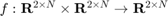

create_si_barrier_certificate
Returns a single-integrator barrier certificate function (). This function takes a 2 x N, 2 x N single-integrator velocity and state vector, respectively, and returns a single-integrator velocity vector that does not induce collisions in the agents.
Contents
Detailed Description
- BarrierGain - affects how quickly the agents can approach each other
- SafetyRadius - affects the distance the agents maintain
A good rule of thumb is to make SafetyRadius a bit larger than the agent itself (0.08 m for the GRITSbot).
Implementation
function [ si_barrier_certificate ] = create_si_barrier_certificate(varargin) parser = inputParser; parser.addParameter('BarrierGain', 1e4); parser.addParameter('SafetyRadius', 0.1); parse(parser, varargin{:}) opts = optimoptions(@quadprog,'Display','off'); gamma = parser.Results.BarrierGain; safety_radius = parser.Results.SafetyRadius; si_barrier_certificate = @barrier_certificate; function [ dx ] = barrier_certificate(dxi, x) %BARRIERCERTIFICATE Wraps single-integrator dynamics in safety barrier %certificates % This function accepts single-integrator dynamics and wraps them in % barrier certificates to ensure that collisions do not occur. Note that % this algorithm bounds the magnitude of the generated output to 0.1. % % dx = BARRIERCERTIFICATE(dxi, x, safetyRadius) % dx: generated safe, single-integrator inputs % dxi: single-integrator synamics % x: States of the agents % safetyRadius: Size of the agents (or desired separation distance) N = size(dxi, 2); x = x(1:2, :); %Generate constraints for barrier certificates based on the size of %the safety radius num_constraints = nchoosek(N, 2); A = zeros(num_constraints, 2*N); b = zeros(num_constraints, 1); count = 1; for i = 1:(N-1) for j = (i+1):N h = norm(x(1:2,i)-x(1:2,j))^2-safety_radius^2; A(count, (2*i-1):(2*i)) = -2*(x(:,i)-x(:,j)); A(count, (2*j-1):(2*j)) = 2*(x(:,i)-x(:,j))'; b(count) = gamma*h^3; count = count + 1; end end %Solve QP program generated earlier vhat = reshape(dxi,2*N,1); H = 2*eye(2*N); f = -2*vhat; vnew = quadprog(H, double(f), A, b, [],[], [], [], [], opts); %Set robot velocities to new velocities dx = reshape(vnew, 2, N); end end